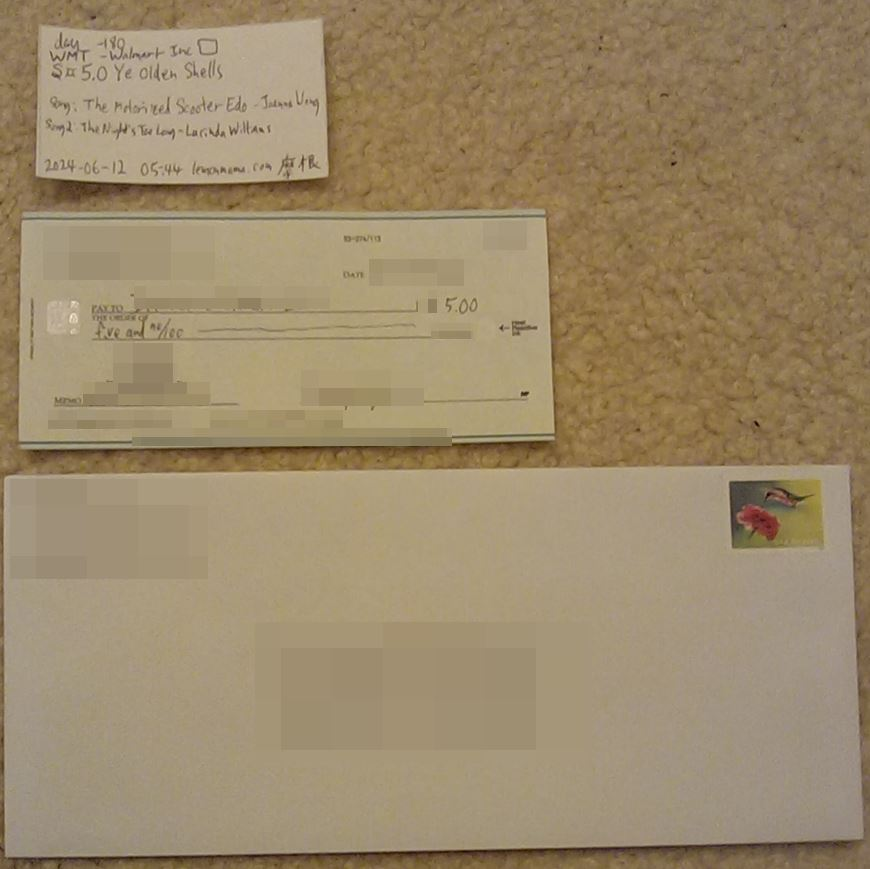
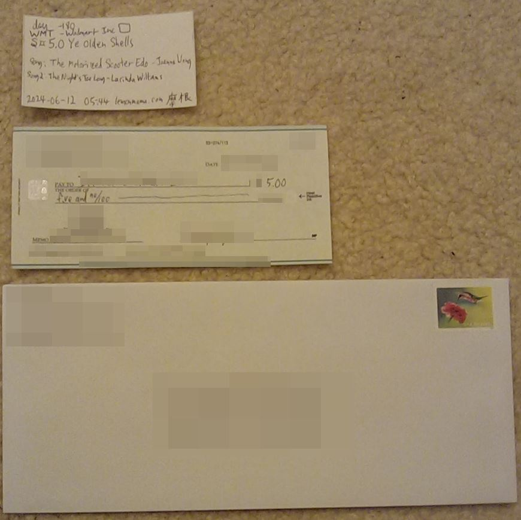

推銷產品的連結 lemonmama.com promoted product is:
2024 December Blog Posts
Folks Only Need to Post Once on One Social Media Site not Duplicate Content on Multiple Channels #0070 - The Goal is to Learn Jiu-Jitsu by Watching Videos #0069 - Six Great Blog posts Calling the Reader to Action #0068 - Ye Olden Shells Benchmark 002 #0067 - Adding Bookmark with Navigation to IPhone Home Screen #0066 - Bought A Company 012 Dont Link Your Identity bot farm phone farms Eleven Step Mega Update - Bought a Company 011 Updates on “Buy a Company Every Day Project” -- Bought a Company 010 Day -184 -- Bought a Company 009 Day -187 Rent’s Due -- Bought a Company 008 Make it a Game Try To Create Physical Systems and Tokens - Bought a Company 007 推銷 Promoted: Personal Budgeting Book | Potato Chips | your sponsor link here #0071 2024-12-31 1907 by Morgan Jassen on lemonmama.comFolks Only Need to Post Once on One Social Media Site not Duplicate Content on Multiple Channels
Only one channel is needed for posting and writing on social media. Humans actively seek out the people and tribes that they want. People actually mostly go and read what they want to read. And these are the people you want reading your content anyway. These are the people who are trying to seek it out. Some organizations post to multiple channels to try and reach more people. Some social media posters think their audience is only browsing one channel and not others. But that is largely a fallacy. A fallacy of social media in general is that people read what is put in front of them. Instead, we only needs to post once on one social media channel. And the interested readers will find us. And this makes it easier for those readers to find, too. Because if I browse to a group's home page, and see 6 social media icons. Then I don't know which are the main channel that is updated most frequently with quality content. And so now as the reader I have to do more work to sort through those. But if I browse to a group's home page and see one or two social media icons. Say one to a public text/picture messaging app. And the other to a longform video content app. Then, I will easily know where to look for updates from that company. Of course I can read and view others' posts on others' channels. But as for my own posting, it is common sense to just have one main good outlet. This is for sites where they fill basically the same functionality. For example text, pictures, short video clips. All of the above sites have all of the below features: LinkedIn, Twitter/X.com, Facebook, Instagram, TikTok, Threads, Youtube. But I still see organizations where the organization has 4, 5, 6, or 7 different social media accounts and they post the __same__ messages on __all__ of them. It just doesn't make sense to post duplicate content on multiple channels. In summary, folks, and companies, you only need one good social media channel and just post all your content there. We'll find you! And it'll be easier for us to find you. 推銷 Promoted: Personal Budgeting Book | Potato Chips | your sponsor link here #0070 2024-12-31 1055 by Morgan Jassen on lemonmama.com#0070 - The Goal is to Learn Jiu-Jitsu by Watching Videos
watch some jiu jitsu videos from ibjjf.com official youtube channel These ones from this youtube channel: "IBJJF (International Brazilian Jiu-Jitsu Federation)" https://www.youtube.com/@ibjjf Alexandre Seixas vs Leonardo Martins / Contagem Open 2024 https://www.youtube.com/watch?v=Le9NwETL350 Gabriel Avila vs Lucas Amorim / Contagem Open 2024 https://www.youtube.com/watch?v=of7g9EcoJCo Mateus Porto vs Oziel Santos / Contagem Open 2024 https://www.youtube.com/watch?v=7LMQL5D85vw next i saw the first was heavy doods. slower stronger action the second was middle guys. faster. my weight but a few pounds heavier. third was light feather. so some many pounds lighter than me. and i saw the styles were different. and so also i had a hard time getting the personalities and the styles in just three short fights with 6 different fighters. so next i get this idea. i should may try to pick one fighter, maye in my weight class, and then just try to watch three videos of that one fighter fighting different opponents. because then my idea is i will have a baseline. my baseline will be that one fighter and their style. and so i'll have a stable reference point from that stable reference point i think it'll be better easier faster more stable from which to grow from there. so i search: Gabriel Avila jiu jitsu Lucas Amorim jiu jitsu continue learning via jiujitsu videos ok and so this search term on bing seems to get two or three different fights i think. so i think I'll try this next. this: "Gabriel Avila" ibjjf ok queue those search results up videos here for watch next time: Luiz Paulo vs Gabriel Avila / São Paulo BJJ Pro 2023 https://www.youtube.com/watch?v=xTYHtgIL6Qo ^ok so in this one Luiz Paulo wins by dicision. they are tumbling a lot and wrestling a lot, i'm not sure much of the time what is going on other than they are each trying to gain some sort of advantage and control the fight. Gabriel Avila vs Luiz Paulo / Betim Open 2023 https://www.youtube.com/watch?v=V2CODn65ZyQ ^this one indeed is a different fight even though it is the same two dudes. in this fight Gabriel Avila wins by decision. They are tumbling around a lot. kinda similar to the other fight with these two i'd say. unfortunately i don't know either of them are really trying to do other than gain a better position and avoid being submitted. so they are both struggling the whole time as far as i can see. this one is long so not sure how/if to find 'gabriel avila' therein even though it came up in the search results. here: IBJJF Worlds 2023 | Black Belt Absolute Opening Rounds to Semifinals - Watch Live on FloGrappling https://www.youtube.com/watch?v=gR9eVHcGA_g ^note this one i don't really watch at this point. because is longer i wanted to just try to focus / follow one fighter for now. Mica Galvao vs Gabriel Avila / Brasileiro 2024 https://www.youtube.com/watch?v=je1upuuU74c ^wow in this one Mica Galvao fairly quickly ends up choking Gabriela Avila and Avila taps/submits due to that. And I watched it a second time because it was so fast. And then I think i see that Mica Galvao was extremely persistent as they both tumbled around across the first 90 seconds, Mica Galvao was not letting go of his goal which evidently was to grab onto the legs/ back legs / back of Avila. And then steadily Galvao improved his grip up Avila's legs/back/shoulders and then fairly quickly establisted a choke hold from the back around Avila's throat+armpit, and then Avila tapped under the choke pressure danger. and finally here again (from the first draft post linked above) is the first video where I had seen "Gabriel Avila" fighting ever. So i can re-watch it again to compare again: Gabriel Avila vs Lucas Amorim / Contagem Open 2024 https://www.youtube.com/watch?v=of7g9EcoJCo ^ok in this one they are grappling and tumbling some a lot. and i noticed Avila tries to choke Amorim from the back. but amorim slips his head oout of the elbow choke eventually. At one time one tries to grab and lever the other's arm, looked like arm bar attempt. looks like a lot of offensive and defensive maneuvering from both men throughout, and so, neither able to submit the other. In the end Gabriel Avila wins by decision. Mo additional notes on all the fights what things I learned: they are grappling for position and but they are also trying to get arm bars and they are also trying to choke from the back. and One thing i noticed, even if clothes/belts get loose and fall off, the ref never stops the fight. With one exception one guys pants fell half off then the ref stopped the fight at an opportune pausing time. And so i learned: - i should try to choke and trty to arm bar. (once i learn how) (or immediately and that's how I'll learn how). - I should keep fighting even if my belt and shirt and pants are loose. keep fighting unless the ref stops the fight. heck fight naked if i need to i guess. - i should't lose position by re-centering to my fight to the center of the mat. if convenienet for me i can re-center the fight. or elase if convenient for me i can fight across the edge of the mat. whatever is best for me and doesn't hurt my position. -I should try like a cockroach to grab and inch and crawl up the other guy's back and then try to choke them from behind. persistence. - If a guy tries to choke me I can grab his arm and sleeve and I can slip my head out of his elbow. Get out of the choke quick as possible with all my strength. - I think quick ezplosive actions can catch my opponent off guard. so choose a line/path towards their neck or arm, then commint to it, then move quick and iterate move quick iterate, move quick iterate as long as I am makeing progress. and don't stop unless it came to a stalemate. make a new plan and quick iterate on the new plan. - in short. I must use my brain to tell all my body including legs and arms, to push pull jump anything, anything goes, to act as one force to choke them and get their back. Or else use my whole self to tell my whole body to push pull slide lever my body and their body, to get their arm barred, like a monkey or a bear would do, no fear no hesitation, so quick don't even think. just adjust and iterate quick, adjust and iterate instant don't think. I don't even need to think of what 'move' to use. As long as my whole body including all four limbs and whole body, is all acting as one to choke them and grab their back, or arm bar them and lever their body and arm, then, all things go. HOwever I should keep in mind i am not trying to permanently injure them nor myself. However beyond that I can do whatever is needed to quickly submit my opponent. This is my biggest takeaway here. In conclusion, watching videos I learned about Jiu-Jitsu. 推銷 Promoted: Personal Budgeting Book | Potato Chips | your sponsor link here #0069 2024-12-31 1009 by Morgan Jassen on lemonmama.com#0069 - Six Great Blog posts Calling the Reader to Action
These are great as a group because persona Shawna Hansen every day calls the blog visitor to action. These 6 are upbeat, and that there is a new one each day shows that Hansen is ready daily to work with someone and talk with someone. Links here: https://shawnahansen.laerrealty.com/posts/i-turn-coffee-into-contracts https://shawnahansen.laerrealty.com/posts/all-in-the-family https://shawnahansen.laerrealty.com/posts/gen-z-spotlight https://shawnahansen.laerrealty.com/posts/happiness-is-eating-pizza-in-your-own-home https://shawnahansen.laerrealty.com/posts/gain-stability-and-put-down-roots https://shawnahansen.laerrealty.com/posts/a-secure-and-rewarding-asset In conclusion, because of this, so I'm liking these series of blog posts in 2024! Promoted Product: Protein Shake Promoted Product: your sponsor link here #0068 2024-12-30 1638 by Morgan Jassen on lemonmama.com #0068 - Ye Olden Shells Benchmark 002 Blog an update to the series. this the main/benchmark previous one!!! ------> https://lemonmama.com/wieldsilver/2022/2022-q1-blog.html#2022-01-02_1500_benchmarks <----this the main/benchmark one!!! In this update, do orient the new ye olden shells (silver bams) this time around, to be calculated off of one/any/all of the following. As they are all more stable timless than is USD. One of the following:
| $ USD (2024-12-30) | ₷¤ Ye Olden Shells (timeless/unchanging) (previously silver bams) | Description |
| $2.84 | ₷¤ 0.08 | hot brewed starbucks coffee 12oz. |
| $5.99 | ₷¤ 0.15 | wine 500ml |
| $10.99 | ₷¤ 0.24 | Disney+ One month Streaming service |
| -- | ₷¤ 0.24 | wine 750ml |
| $10.99 | ₷¤ 0.29 | wine 1.5L |
| -- | ₷¤ 0.34 | cooked BONE-IN HAM 4.45lbs |
| $14.60 | ₷¤ 0.35 | book of 20 stamps post office |
| -- | ₷¤ 0.41 | one year .com domain registration |
| -- | ₷¤ 0.42 | Massachusetts minimum hourly wage |
| $15.00 | ₷¤ 0.44 | one month mobile data phone service |
| -- | ₷¤ 0.76 | a 25lb bag of rice at the store |
| -- | ₷¤ 0.76 | Bottle London dry gin 750ml |
| $22.69 | ₷¤ 0.77 | automobile gas fillup 7.44 gallons |
| -- | ₷¤ 1.19 | American Silver Eagle $1 coin 1oz |
| $95.00 | ₷¤ 1.32 | eating out for 4 people on a budget |
| -- | ₷¤ 2.29 | Automobile Oilchange & tire rotation |
| $79.93 | ₷¤ 3.18 | One weeks groceries at the store |
| -- | ₷¤ 8.82 | three nights stay average hotel |
| -- | ₷¤ 65.62 | American Gold Eagle coin 1 oz |
| -- | ₷¤ 636.76 | MSRP New 2022 Toyota Corolla LE CVT |
| $15.99 | ₷¤ 0.41 | Bottle White Rum commodity 40%alc. 750ml |
| $2621.43 | ₷¤ 67.63 | gold spot (Gold Ask) |
| $6.00 | ₷¤ 0.15 | 1 box of girl scout cookies |
| $-- | ₷¤ -- | 1x 1lb. bag lentils |
| $93593 | ₷¤ 2414 | ₿1 Bitcoin |
| $0.0064 | ₷¤ .00016 | ¥1 Japanese Yen |
| $1.04 | ₷¤ .0268 | €1 Euro |
#0067 - Adding Bookmark with Navigation to IPhone Home Screen
Problem: when adding bookmark to iphone home screen, for certain urls/sites, it adds it as a shortcut to a tab. hack for adding a bookmark to iPhone Desktop. an "Add to Home Screen" bookmark that is. 'Add to Home Screen' = '加入主畫面' Workaround solution here. Steps a,b,c,d,e here: a. Turn off iPhone wifi/network b. Type in to safari browser address bar, for example news.google.com or search.brave.com etc. c. Ofc browser shows like '...can't open the page...' No worries, proceed as usual to share button then choose "Add to Home Screen" d. See icon was added to iPhone home screen. Icon may say 'Can't Open Page' (you can rename that to whatever during creating it). In any case it still it created the bookmark, so job is done! e. Turn on wifi/network and test it. Now it launches safari in normal mode with navigation/back/forward buttons (doesn't launch in no-navigation app mode) Screenshot below shows these three elements: * bookmarks on the home page * first bookmark opens in browser with navigation/tabs. this one was created while offline. nice. * second bookmark opens in safari quasi-browser mode without navigation buttons. Screenshot here: In conclusion, this has been about adding bookmark with navigation to iphone home screen. related: Different behavior on websites launched from “Add to Home Screen” icon https://apple.stackexchange.com/questions/12621/why-does-iphone-navigation-bar-disappear-when-browsing-certain-sites #0066 2024-12-11 1114 by Morgan Jassen on lemonmama.com{kind=link}
#0066 - Bought A Company 012
• The goal is to get healthier, wealthier, and wiser. • The project is that each day I buy ₷¤5 Ye Olden Shells of a company. • I opened a brokerage account. • Each day for a month, I mailed a check for ₷¤5 Ye Olden Shells to my brokerage. • When the dust cleared at the end of the month, I had sent ₷¤115 Ye Olden Shells to my brokerage • I used each of those ₷¤5 chunks to buy a company, one piece at a time. • It's been 202 days since (2024-May-23rd) since my post Bought a Company 002 • So when the dust cleared here was my starting point was, ₷¤15 Shells Cash and ₷¤10 Shells worth each of the following ten companies: FDX FIVE HSY KO MCD NKE PEP SBUX UPS WMT Here’s today’s project update: 今天報告一下 1.) Here is a screenshot of the positions, of the companies that I bought: 2.)
So far half of the companies value increased, and the other half of the companies the value decreased. So five and five.
3.)
My biggest winners so far have been WMT and FIVE, whereas my biggest losers so far have been PEP and HSY. The other six companies were somewhere in between those.
4.)
So according to the screenshot of the brokerage portal, my total portfolio is currently worth ₷¤124.16 Ye Olden Shells.
Therefore I say the value rose from ₷¤115 Shells to ₷¤124.16 Shells in the past 202 days.
So that's good for me.
However my own personal note on this further is I personally believe the stock market is also in a huge bubble in 2024. And I can't say that the value of cash isn't plummetting too, and also I can't say that we aren't headed for a gigantic economy crash (USA and even the world) in the coming years or months. So. I am still glad I bought these companies as I still prefer companies to cash. However. I am doing my own research and making my own decisions, and trying to learn and trying to become happier and more wealthy in 2024.
In conclusion, I bought companies, held companies, didn't sell any companies, learned a lot, and made my life healthier, wealthier, and wiser.
Link to the previous post in this series:
Eleven Step Mega Update - Bought a Company 011
Note to readers: Do your own research and make your own choices. Don't do anything just because you saw me or someone else do it. I'm not recommending you do any of this, this is foremost for entertainment and for learning. 提醒讀者 自己研究自己決定 我沒有建議你去行動以上的意見 這都是為了樂趣跟為了學習
#0065
2024-12-10 2206 by Morgan Jassen on lemonmama.com
2.)
So far half of the companies value increased, and the other half of the companies the value decreased. So five and five.
3.)
My biggest winners so far have been WMT and FIVE, whereas my biggest losers so far have been PEP and HSY. The other six companies were somewhere in between those.
4.)
So according to the screenshot of the brokerage portal, my total portfolio is currently worth ₷¤124.16 Ye Olden Shells.
Therefore I say the value rose from ₷¤115 Shells to ₷¤124.16 Shells in the past 202 days.
So that's good for me.
However my own personal note on this further is I personally believe the stock market is also in a huge bubble in 2024. And I can't say that the value of cash isn't plummetting too, and also I can't say that we aren't headed for a gigantic economy crash (USA and even the world) in the coming years or months. So. I am still glad I bought these companies as I still prefer companies to cash. However. I am doing my own research and making my own decisions, and trying to learn and trying to become happier and more wealthy in 2024.
In conclusion, I bought companies, held companies, didn't sell any companies, learned a lot, and made my life healthier, wealthier, and wiser.
Link to the previous post in this series:
Eleven Step Mega Update - Bought a Company 011
Note to readers: Do your own research and make your own choices. Don't do anything just because you saw me or someone else do it. I'm not recommending you do any of this, this is foremost for entertainment and for learning. 提醒讀者 自己研究自己決定 我沒有建議你去行動以上的意見 這都是為了樂趣跟為了學習
#0065
2024-12-10 2206 by Morgan Jassen on lemonmama.com
Dont Link Your Identity
Note to self: the title says YOU but the body intro sentence switches to using I. ON PURPOSE. Because the title SHOULD be patronizing and should grab people. However the explanation shouldn't be confrontational nor patronizing. Title: Don't Link Your Identity to Your Phone Body: I Don't Link My Identity To My Phone Here are some ways how I do this: * I got, and have, a job and a lifestyle, and a toastmasters club, where I talk with people face to face every day. * Every 30 days without fail, I reset my smartphone to factory default settings. * I got a second phone and use it for half/some of my digital activities. That way no single device seems to control my identity. * As my main voice-call and SMS-text device, I use a dumbphone (flip phone). * I switch back and forth between my dumb phone and smart phone as needed, but default to the dumb phone. * I got and have a laptop computer and use that for some digital activities instead of my phone. (always email, sometimes podcasts) * I backup all my data and contacts and photos to static physical devices (DVD or external hard drive or USB flash drive). I don't back any of my __important__ data (that I feel I can't go without) to the cloud. * I keep my main master contact list (address book) in a computer file, not in my smartphone * I try out other free non-commercial messaging/calling apps, for example like GNU Jami. Here are some benefits to this: * I control my phone, my phone doesn't control me. * I reduce, or keep at bay, what I call "iPhone Mind Control". Note: Not just iPhone but facebook/instagram, google, snapchat, microsoft, tiktok, twitter/x.com, etc. etc. etc. * I shake off the feeling that "I feel like I can't be without my smartphone for a day". * I spend less time looking at a screen and that is better for my mind, beter for my eyes, better for my health. In conclusion, don't link your identity. Save my data to devices and drives that I control. Use files and devices and apps that I control. Use multiple devices, and reset devices monthly/weekly to default blank state. Thus I control my identity on my devices. #0064 2024-12-10 2149 by Morgan Jassen on lemonmama.combot farm phone farms
2024-08-03 on this joe rogan episode, near the end, they are still going strong in the last 10 minutes. and they mention 'bot farms' (rows of cell phone farms) and how those are influencing people online. "#2179 - Bredget Phetasy" - https://open.spotify.com/episode/4Yb7vL7gvDBG8WKKxGPQn7?si=631586d583b44be5 https://www.bing.com/search?q=social+media+farm+array+of+smartphones&qs=n&form=QBRE&sp=-1&ghc=1&lq=0&pq=social+media+farm+array+of+smartphone&sc=11-37&sk=&cvid=6F9FB2216A4E43B0A463D211C78FD767&ghsh=0&ghacc=0&ghpl= https://www.vice.com/en/article/d3naek/how-to-make-a-phone-farm In conclusion these are links to bridget phetasy podcast on cell phone farms, and also other links how to make a cell phone farm. #0063 2024-12-05 1333 by Morgan Jassen on lemonmama.comEleven Step Mega Update - Bought a Company 011
The project is that I will buy ₷¤5 Ye Olden Shells of a company each day. To get healthier, wealthier, and wiser. Build discipline and make my life better. In my opinion, it is better to each day first buy a part of a company, before buying, or instead of buying, any other extra stuff such as: ₷¤5 Shells of gazingus pins, or ₷¤5 Shells of coffee, or ₷¤5 Shells of wine, or ₷¤5 Shells of scratch tickets. This project update is listed in 11 steps, here below. Here’s today’s project update: 今天報告一下 1.) It's been 196 days since my post Bought a Company 002 2.) So far, ONE PER DAY, I sent a bunch more of ₷¤5 checks for deposit, to my brokerage for my brokerage account. Here are a few screenshots:{kind=link}


 
3.)
Note that it takes a week for each check to get there, and then it takes 10 days after that for the check funds to become available.
4.)
Here are a few screenshots, as the days went by, of my transfer history on online brokerage account portal:

3.)
Note that it takes a week for each check to get there, and then it takes 10 days after that for the check funds to become available.
4.)
Here are a few screenshots, as the days went by, of my transfer history on online brokerage account portal:
{kind=link}
{kind=link}
{kind=link}


 6.)
As the weeks went by, the funds started becoming available. And so I started buying companies. I bought them in ₷¤5 chunks, one per day. Here are screenshots of buying a few companies. Notice since i buy such small chunks, thus I can't buy one full share of a company each time. For example in one screenshot I spent ₷¤5 Shells and bought "0.0745 shares" of a company, and for another the same amount of money bought "0.0429 shares". Screenshots here:
6.)
As the weeks went by, the funds started becoming available. And so I started buying companies. I bought them in ₷¤5 chunks, one per day. Here are screenshots of buying a few companies. Notice since i buy such small chunks, thus I can't buy one full share of a company each time. For example in one screenshot I spent ₷¤5 Shells and bought "0.0745 shares" of a company, and for another the same amount of money bought "0.0429 shares". Screenshots here:
{kind=link}
{kind=link}

{kind=link}
 7.)
As more days and weeks went by, here are a bunch of screenshots of the positions, of the companies that I bought. At first I had no positions. Then after I started buying companies, each company starts showing in the list along with the size of the position I hold in that company:
7.)
As more days and weeks went by, here are a bunch of screenshots of the positions, of the companies that I bought. At first I had no positions. Then after I started buying companies, each company starts showing in the list along with the size of the position I hold in that company:
{kind=link}
{kind=link}
{kind=link}

{kind=link}
 8.)
Here's my list of 10 companies (in alphabetical order) that I ended up buying for this project:
FDX - FEDEX CORPORATION
FIVE - FIVE BELOW
HSY - HERSHEY CO/THE
KO - COCA-COLA CO/THE
MCD - MC DONALD'S-CORP
NKE - NIKE INC -CL B
PEP - PEPSICO INC
SBUX - STARBUCKS CORP
UPS - UNITED PARCEL SERVICE-CL B
WMT - WALMART INC
9.)
I learned one thing that is it was exhausiting daily sending check and daily logging on daily checking account and daily buying one small position.
So I may switch to a fortnightly sending/buying ongoing instead of daily.
10.)
I learned a second thing, that is that buying companies, even using physical tokens like envelopes, stamps, checks, and bitsycards, didn't quite work as I expected it. In other words I see the allure of buying (coffee, beer, scratch tickets) is still very alluring, so the gamifying that I did of trying to buy a company each day, didn't totally replace those. So need to still pivot more. Maybe need to find another habit to replace those other bad habits. Actually since then started another habit, training daily Jiu-Jitsu gym, that is doing pretty good to replace any of my bad habits.
11.)
I learned a third thing, and did something.
I really did, for about 30 days or so, prepped to buy, and bought, part of a company each day. And in the end I did end up with 10x different companies, ₷¤5 (x2) worth of each company. And as a result, I learned how to go through the motions of investing in companies, and it did make my life healthier, wealthier, and wiser.
In conclusion, I bought companies daily, became exhausted, learned a lot, and made my life healthier, wealthier, and wiser.
See previous blog posts describing this project:
Bought a Company 010
Bought a Company 009
Bought a Company 008
Bought a Company 007
Bought a Company 006
Bought a Company 005
Bought a Company 004
Bought a Company 003
Bought a Company 002
Bought a Company 001
Note to readers: Do your own research and make your own choices. Don't do anything just because you saw me or someone else do it. I'm not recommending you do any of this, this is foremost for entertainment and for learning. 提醒讀者 自己研究自己決定 我沒有建議你去行動以上的意見 這都是為了樂趣跟為了學習
#0062
2024-12-05 1242 by Morgan Jassen on lemonmama.com
8.)
Here's my list of 10 companies (in alphabetical order) that I ended up buying for this project:
FDX - FEDEX CORPORATION
FIVE - FIVE BELOW
HSY - HERSHEY CO/THE
KO - COCA-COLA CO/THE
MCD - MC DONALD'S-CORP
NKE - NIKE INC -CL B
PEP - PEPSICO INC
SBUX - STARBUCKS CORP
UPS - UNITED PARCEL SERVICE-CL B
WMT - WALMART INC
9.)
I learned one thing that is it was exhausiting daily sending check and daily logging on daily checking account and daily buying one small position.
So I may switch to a fortnightly sending/buying ongoing instead of daily.
10.)
I learned a second thing, that is that buying companies, even using physical tokens like envelopes, stamps, checks, and bitsycards, didn't quite work as I expected it. In other words I see the allure of buying (coffee, beer, scratch tickets) is still very alluring, so the gamifying that I did of trying to buy a company each day, didn't totally replace those. So need to still pivot more. Maybe need to find another habit to replace those other bad habits. Actually since then started another habit, training daily Jiu-Jitsu gym, that is doing pretty good to replace any of my bad habits.
11.)
I learned a third thing, and did something.
I really did, for about 30 days or so, prepped to buy, and bought, part of a company each day. And in the end I did end up with 10x different companies, ₷¤5 (x2) worth of each company. And as a result, I learned how to go through the motions of investing in companies, and it did make my life healthier, wealthier, and wiser.
In conclusion, I bought companies daily, became exhausted, learned a lot, and made my life healthier, wealthier, and wiser.
See previous blog posts describing this project:
Bought a Company 010
Bought a Company 009
Bought a Company 008
Bought a Company 007
Bought a Company 006
Bought a Company 005
Bought a Company 004
Bought a Company 003
Bought a Company 002
Bought a Company 001
Note to readers: Do your own research and make your own choices. Don't do anything just because you saw me or someone else do it. I'm not recommending you do any of this, this is foremost for entertainment and for learning. 提醒讀者 自己研究自己決定 我沒有建議你去行動以上的意見 這都是為了樂趣跟為了學習
#0062
2024-12-05 1242 by Morgan Jassen on lemonmama.com
Updates on “Buy a Company Every Day Project” -- Bought a Company 010
About 14 days ago i went on hiatus. Personal note is i went vacation. But point is i stopped sending in checks for ₷¤5 Shells each day. During that time i paused and kept one of the bitsycards in my wallet as it happened to be the one i paused on/after "day -178". Ok now I am back from vacation. I see that where i paused was also that i had bought (3) x (₷¤5) worth of stocks so far: so ₷¤5 WMT ₷¤5 FIVE ₷¤5 HSY cool. And in the meantime, while on hiatus, the rest of my checks got deposited and ready to buy stock. So now ₷¤100 Shells ready to go! and so now am back from hiatus. So I go ahead and i keep/resume buying stocks ₷¤5 Shells per day. so now I buy ₷¤5 NKE However. The update is that while on hiatus i realized how burned out i had been sending in a check every single morning. So. Now i think I learned my lesson. I got discipline to send the money. And so I propose i will now, for the rest of the 200 days, do the following, a more relaxed schedule but still fairly disciplined. 1. - send a check once per week instead of once per day. 2. - put roughly one market order per day the standard ₷¤5 of a company per day. BUT IF I MISS A DAY ILL JUST DO TWO THE NEXT DAY in order less strict and grueling. These two changes will make it so that i'll still be dollar cost averaging, but, now on more of a daily weekly basis. instead of a daily basis. weekly instead of daily. In conclusion, i went on hiatus, then came back and was recharged, but at the same time realized I had been burned out. So I learned. So now I'm tweaking my strategry to be more sustainable. Onwards! Bought a Company 009 Bought a Company 008 Bought a Company 007 #0061 2024-12-05 1134 by Morgan Jassen on lemonmama.com{kind=link}
Day -184 -- Bought a Company 009
Notes from today and for the project: Today is day "-184" So I've been doing this for about 16 days or so, counting down from 200 towards 1. It's grueling, I don't recommend doing this type of game. Observations: * It's still not as satisfying, not the same, short term, each day so far, compared to buying and enjoying a hot cup or coffee, or buying and enjoying a couple of cold beers. * It seems more like work, some days I get distracted and it takes me an hour to: - log on to the brokerage portal, and - write the check for ₷¤5 Ye Olden Shells, and - address the envelope, and - write the bitsycard, and - go mail the letter * 'funds on hold' is up to ₷¤65.00 Ye Olden Shells. No funds yet ready to buy stocks. Painful waiting. However, the above tediousness I have made some progress that feels promising to me: ** I am awaiting the day should be soon, when the funds will go off of 'hold' and be ready to buy some companies. So looking forward to this, makes it a bit enjoyable. ** I started writing song names on the bitsycard each day. Totally unrelated to the goal here. However. What it does is makes it more fun. Make it a game. It's usually a song I heard on the radio or on the streaming, that morning when prepping the check/deposit/mailing. And its unique each day so adds color and motion and energy to the process in my opinion. ** I started carrying the bitsycard for that day, in my wallet each day. It somehow feels good to allways carry on me every minute this token of my project. And this token is fresh renewed each day. For example If I see folks around me buying gazingus pins like coffee or wine or scratch tickets during the day, and feel like buying a gazingus pin myself, then, what I can do is quick take out my fresh bitsycard from my wallet and hold it and look at it and maybe sing the song written thereupon, and maybe feel better that this is a placeholder for my gazingus pin and this placeholder in in my opinion represents a positive investment of money instead of a needless drain of money. So all told, I may still need to tweak it more before it will be as satisfying as my old gazingus pins. However it already is getting more enjoyable. So we'll see. So those are some updates. In conclusion, investing ₷¤5 per day buying a company is still not the same thing as buying a gazingus pin, however, by making it a game, It is getting more and more enjoyable so I'll plan to keep with it for now. Bought a Company 008 Bought a Company 007 Bought a Company 006 #0060 2024-12-05 by Morgan Jassen on lemonmama.comDay -187 Rent’s Due -- Bought a Company 008
It's day -187, and the Rent's Due. I need to pay the rent. Every day. Perform every day. It's tedious. So it's day -187. So about 13 days now in a row. I sent 13 checks in, each for ₷¤5 Ye Olden Shells. Four of them I made a mistake and so got delayed. Looking now in the account, ₷¤30 Ye Olden Shells are on hold waiting to be processed. As soon as those are processed I can use them to buy a company. Also I started waffling on which companies to buy. I chose 10 company names of brands I like. There is a bit of a theme of pairs of companies in the same niche (Home Depot & Lowe's) and (PepsiCo & Coca-Cola) and (FedEx & UPS). This is on purpose because I like to buy more than one company even if they are in the same niche. No one says I can't. I'm gonna. Another thing I ran into in the past few days. I really started embracing the bitsycard aspect in the last few days. I love the feeling of holding that bitsycard on the way back from dropping the check in the mailbox. I like to hold it like a receipt. And I usually listen to music during this whole process at 5am. And so I usually hear a song I like during this time. And so I took to putting the name of a song I like, that I heard during these minutes/hour, on the bitsycard. No reason, but makes it fun. Make it a game. And I write on the bitsycard which company earmarked to buy with that particular day's ₷¤5 deposit. And I put the bitsycard for that day in my wallet. So I can look at it anytime in the day and remind myself that rent's due. In conclusion, Im still gonna buy a company every day. It's tedious but bitsycard makes it a game. Rent's due.
Bought a Company 007
Bought a Company 006
Bought a Company 005
#0059
2024-12-03 1501 by Morgan Jassen on lemonmama.com
In conclusion, Im still gonna buy a company every day. It's tedious but bitsycard makes it a game. Rent's due.
Bought a Company 007
Bought a Company 006
Bought a Company 005
#0059
2024-12-03 1501 by Morgan Jassen on lemonmama.com